A HOMEBREW MENU-BAR APP FOR MAC
Homebrew from
your menu bar.
KegPilot is a native Homebrew GUI for Mac that lives in your menu bar. Update, upgrade, and clean up Homebrew, browse installed packages, and search & install new ones — with live output and no Terminal.
Download for macOSv2.3 / macOS 13+ / Apple Silicon
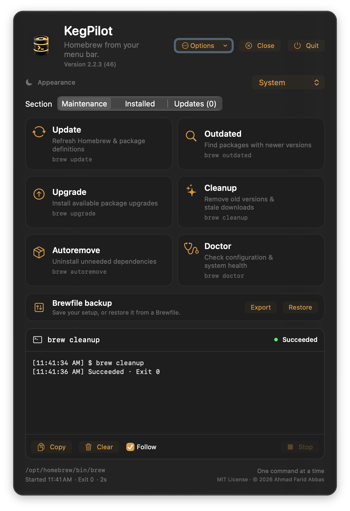
01 / THE PANEL
One window.
Every chore.
Maintenance actions, your installed inventory, available updates, and a live console — all in a single menu-bar panel.
Each action runs a real brew command with fixed arguments — no shell interpolation. Close tucks the panel away; KegPilot stays in the menu bar.
02 / THE LOOKS
System, light,
dark — or paper.
KegPilot follows your system appearance or locks to Light, Dark, or one of two warm Papery themes — parchment and ink, or charcoal paper. Here are a few of its screens.

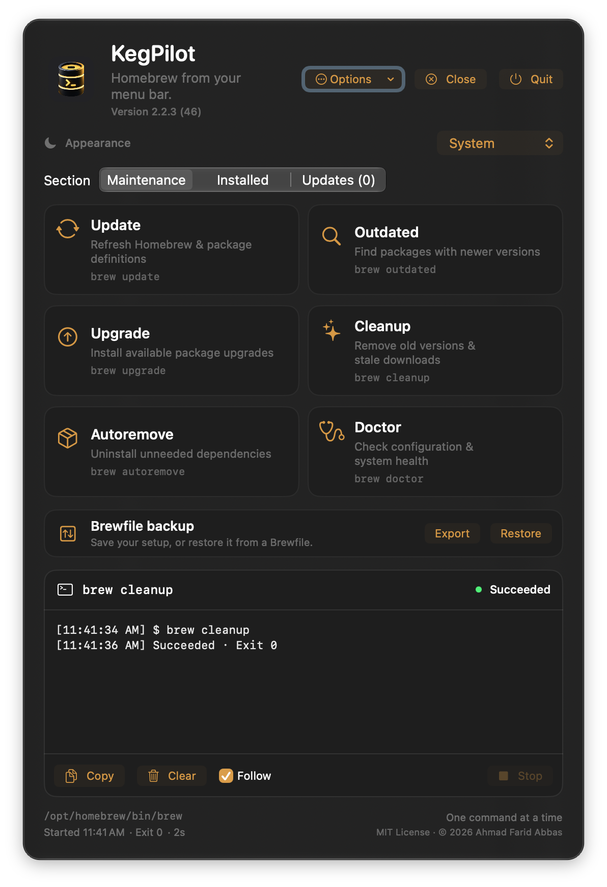
MaintenanceSystem ↗
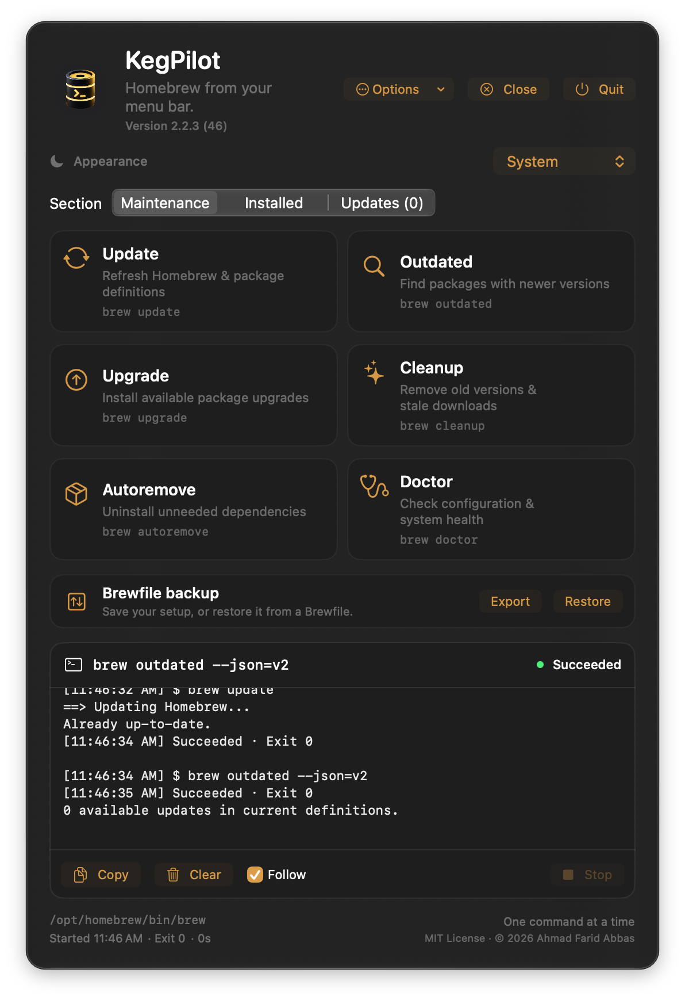
MaintenanceDark ↗
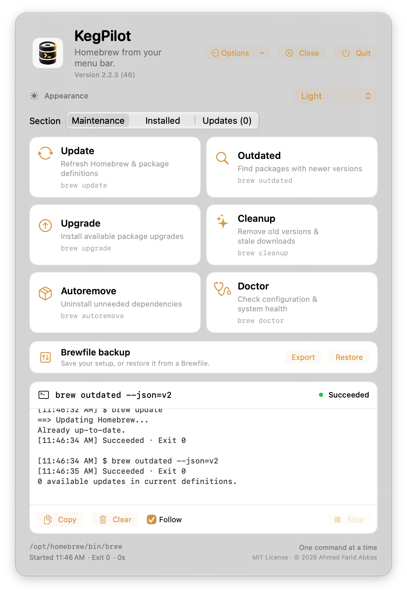
MaintenanceLight ↗
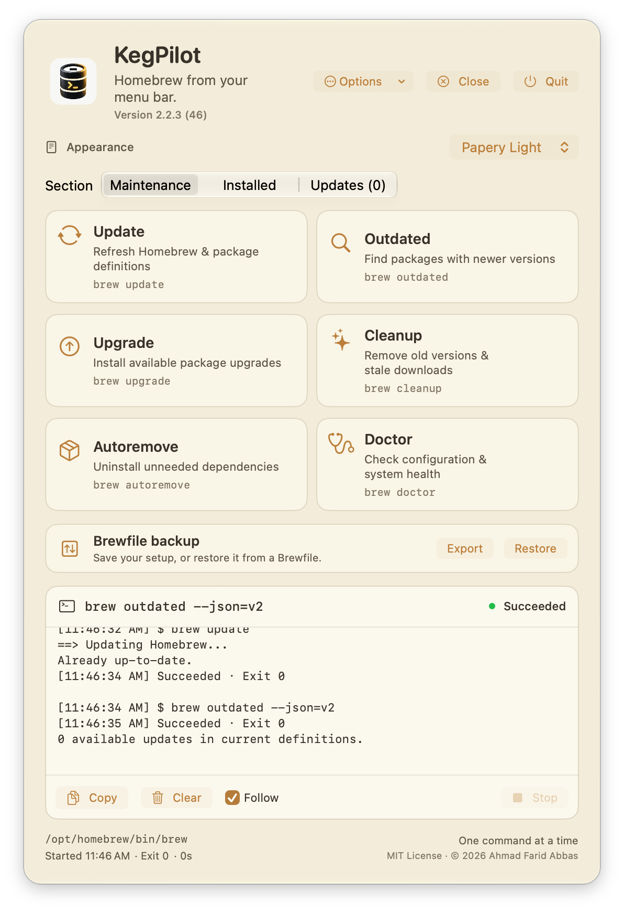
MaintenancePapery Light ↗
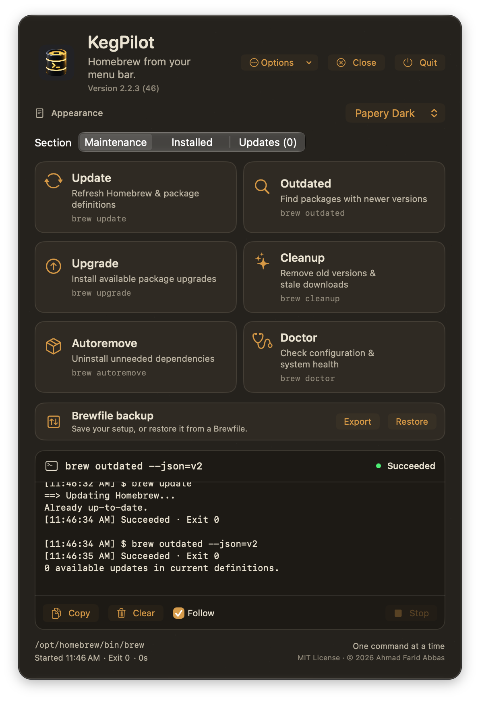
MaintenancePapery Dark ↗
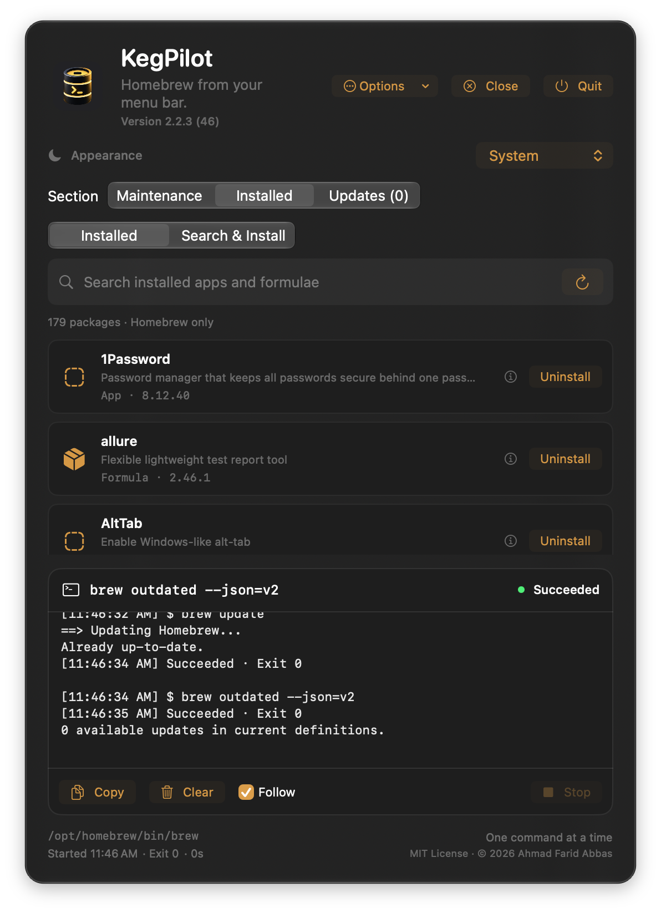
InstalledSystem ↗
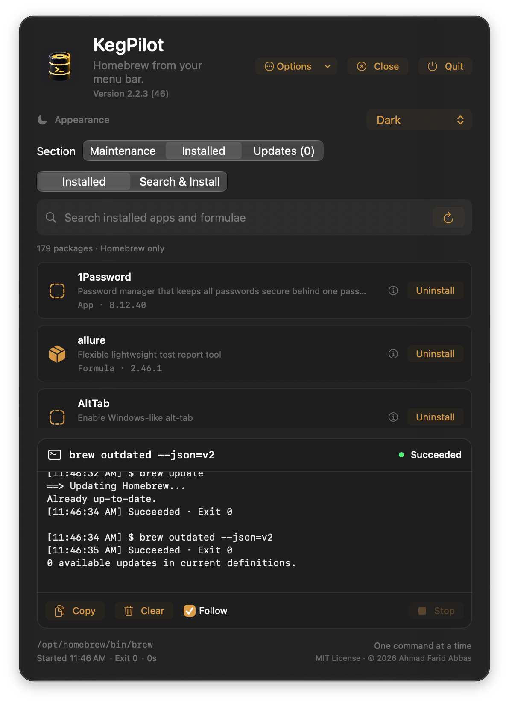
InstalledDark ↗
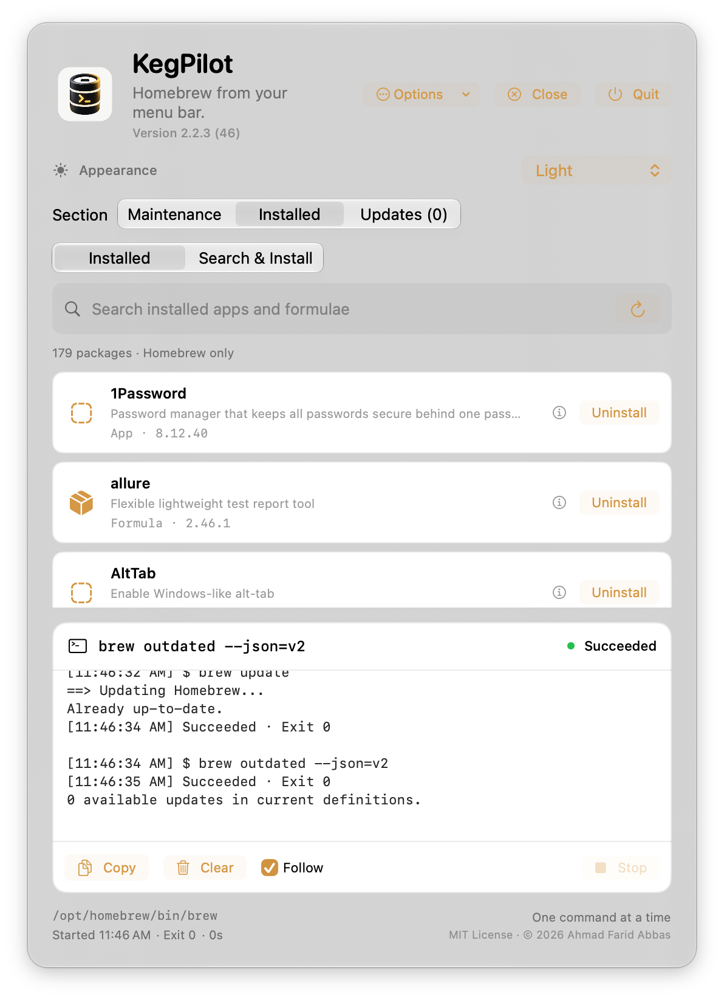
InstalledLight ↗
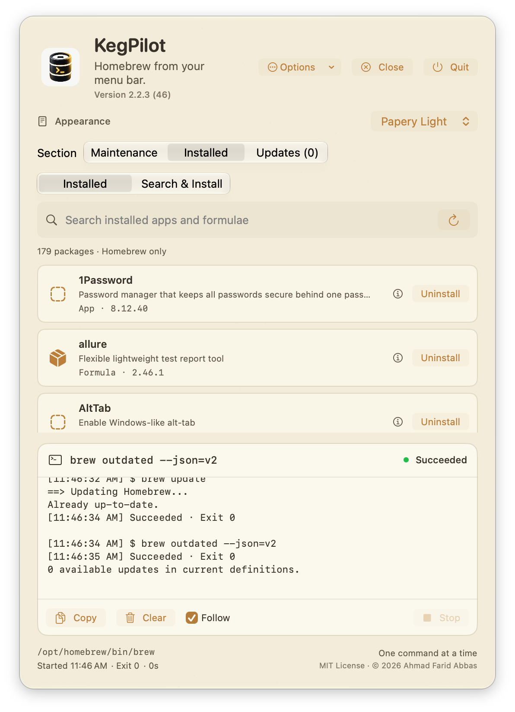
InstalledPapery Light ↗
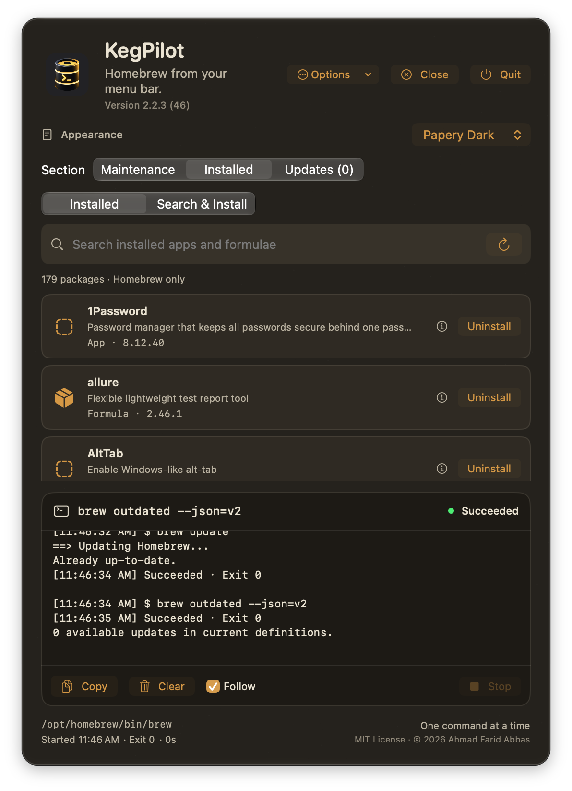
InstalledPapery Dark ↗Screenshots of KegPilot's interface across appearances. Select an image to view it larger.
03 / THE DETAILS
Built to
behave.
- Maintenance
- Update, Outdated, Upgrade, Cleanup, Autoremove, and Doctor — each a real
brewcommand run with fixed, validated arguments. - Inventory & install
- Browse installed formulae and casks with search, then uninstall with a confirmation. Switch to Search & Install to search all of Homebrew — each result shows its description, version, and whether it's already installed — and install with a confirmation. Homebrew's dependency checks stay active; the installed list refreshes automatically.
- Updates
- See installed → current versions from
brew outdated, upgrade individually or all at once. Pinned packages are labeled. - Live console
- Merged stdout/stderr in arrival order, timestamps, duration, and the real exit code. Stop escalates SIGINT → SIGTERM → SIGKILL.
- Appearance
- System, Light, Dark, or the warm Papery Light and Papery Dark themes — saved across launches, with matching light/dark artwork. A visible version line and Close / Quit controls.
- Considerate
- One command at a time. Closing the panel keeps a job running. Quit is blocked while busy. No Dock icon; a menu-bar template glyph.
04 / FAQ
Questions,
answered.
- What is KegPilot?
- KegPilot is a free, open-source Homebrew GUI and menu-bar manager for Apple Silicon Macs. It gives Homebrew a visual interface so you can update, upgrade, clean, diagnose, browse, search, install, and manage packages without remembering Terminal commands. KegPilot runs the
brewbinary already on your Mac — it does not replace Homebrew. - Is there a GUI for Homebrew on Mac?
- Yes — KegPilot is a free native Homebrew GUI that lives in your Mac's menu bar. It runs
brew update,upgrade,cleanup,autoremove, anddoctor, browses installed formulae and casks, and can search and install new packages, all without the Terminal. - Can I update and upgrade Homebrew without the Terminal?
- Yes. KegPilot runs real
brewcommands from a menu-bar panel and streams their live output in a built-in console, so you can update, upgrade, and clean up Homebrew without typing a single command. - Does KegPilot manage Homebrew updates?
- It does. The Updates tab reads
brew outdatedand shows installed → current versions, so you can upgrade packages one at a time or all at once. Pinned packages are labeled. - What are the requirements?
- macOS 13 Ventura or later on Apple Silicon, plus an existing Homebrew install at
/opt/homebrew. KegPilot is free and open source under the MIT License. - Does KegPilot store my Mac password?
- No. When a cask installer needs administrator rights, KegPilot prompts for your password and passes it straight to macOS
sudo. It's held in memory for that one command only — never saved, logged, written to disk, stored in the Keychain, placed in command arguments or environment variables, or sent over the network. See Your password for the full technical details. - Is KegPilot free and open source?
- Yes. KegPilot is free and released under the MIT License, and its full source code is on GitHub. There is no paid tier.
- Does KegPilot support Intel Macs?
- No. KegPilot targets Apple Silicon and expects Homebrew at
/opt/homebrew, which is the Apple Silicon Homebrew location. It requires macOS 13 Ventura or later. - Where can I download KegPilot?
- Download it from the install section of this site, or from the latest GitHub release. KegPilot is ad-hoc signed (not Apple-notarized), so after unzipping you clear the macOS quarantine flag with
xattr -dr com.apple.quarantine /Applications/KegPilot.app.
05 / VS TERMINAL
KegPilot vs
the Terminal.
KegPilot does not replace Homebrew — it puts a native graphical interface around the same brew commands you'd otherwise type. Both do the same work underneath.
- Homebrew in Terminal
- A command-line interface: you type
brewcommands by hand and get the full flexibility of the CLI, including flags and options KegPilot doesn't surface. - KegPilot
- A native menu-bar interface for the common operations: one-click Update, Upgrade, Cleanup, Autoremove, and Doctor, plus visual browse, search, install, and uninstall — with live command output in a built-in console.
- What they share
- KegPilot still uses Homebrew underneath, running the
brewbinary already installed on your Mac. You can keep using the Terminal whenever you need it.
06 / YOUR PASSWORD
Your password is
never stored.
Some Mac apps (like Zoom) run a .pkg installer that needs administrator rights. When Homebrew asks for your Mac password, KegPilot prompts you securely — and that password is never saved, never logged, and never written to disk.
KegPilot does not store, log, cache to disk, or transmit your password. It is held in memory only for the duration of a single Homebrew command, handed straight to macOS sudo, then discarded.
Details — how it works, for the technically curious
In two lines: the password lives only in RAM for one Homebrew command — typed into a masked SecureField → BrewModel.passwordDraft, handed to AskpassBroker, then written to a private 0600 FIFO (named pipe) that the SUDO_ASKPASS helper streams to sudo's standard input. It is never placed in a command's arguments, in an environment variable, on disk, in the macOS Keychain, or in the console log.
The full path your password takes
- While you type it: an in-memory string bound to a masked
SecureField. Nothing is written anywhere yet. - On Submit: it is handed to a one-shot broker and the on-screen draft is cleared immediately.
- Reaching sudo: the broker writes it to a FIFO — an in-kernel pipe buffer, not a file on disk — inside a private per-command temp directory (mode
0700, the pipe0600, owned only by you). A tiny helper script (the standard macOSSUDO_ASKPASSmechanism) reads from that pipe and passes the password tosudo. For a multi-step action (e.g. uninstalling an app that removes several services), you type it once and the rest are answered from memory. - When it's destroyed: the draft is cleared on submit/cancel and whenever the prompt closes; the broker's in-memory copy and the temp pipe are deleted the instant the command finishes, is stopped, or the console is cleared. Nothing survives the command — let alone an app restart.
Where it is not
- Never in a command's arguments (
argv) —brewandsudoare launched with fixed argument lists. - Never in an environment variable —
SUDO_ASKPASSholds the helper's path, not your password. - Never in a regular file, the macOS Keychain,
UserDefaults, or any preference. - Never written to the console output, and never sent over the network.
Honest caveats
Swift strings aren't guaranteed to be zeroed by the runtime, so a transient copy may briefly remain in freed memory until reused — the same practical limit every GUI sudo front-end has. KegPilot best-effort zeroes its own byte buffer after use and holds the value only for one command. KegPilot is open source — the entire mechanism is in AskpassBroker.swift, so you can read exactly what it does.
- Download & unzip
Open the ZIP to find
KegPilot.app. - Move to Applications
Drag
KegPilot.appinto your Applications folder. - Let it open
Because KegPilot is open source and not notarized by Apple, macOS quarantines it on download. Run this once in Terminal to let it launch — no right-click dance needed:
xattr -dr com.apple.quarantine /Applications/KegPilot.app - Find the keg
Click the KegPilot keg glyph in the menu bar to open the panel.
Compatibility & installation notes
This build is ad-hoc signed and is not Apple-notarized. The command above clears macOS's quarantine flag so the app opens cleanly; alternatively you can right-click → Open the first time, approve it in Privacy & Security, or build locally from src/ with ./build.sh.
KegPilot needs an existing Homebrew install at /opt/homebrew. It reads your login environment to locate brew and shows the resolved path in the footer.
Optimized arm64 build and runner tests passed. Interactive UI and VoiceOver checks are recommended manually; the panel is a streaming console, not a full terminal.